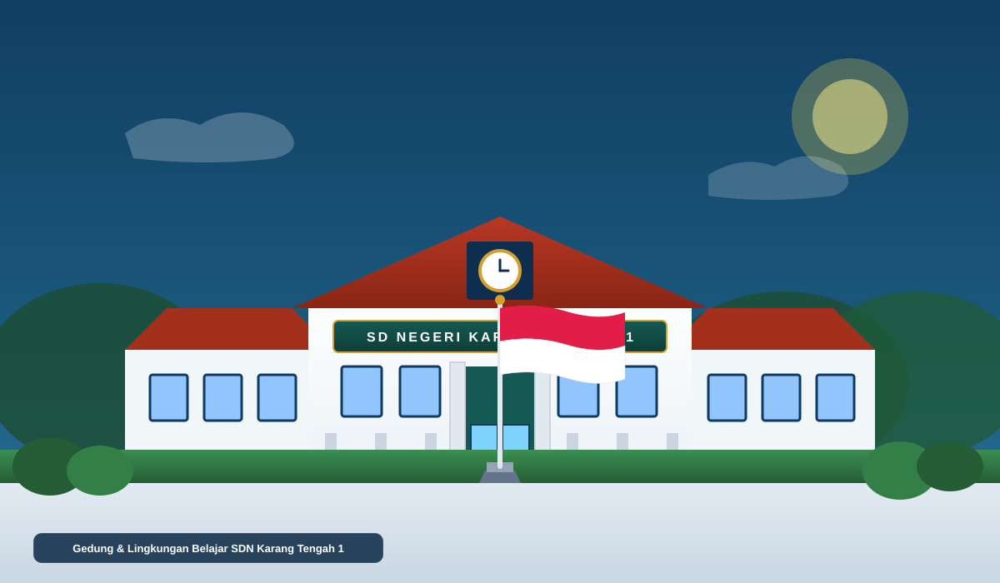
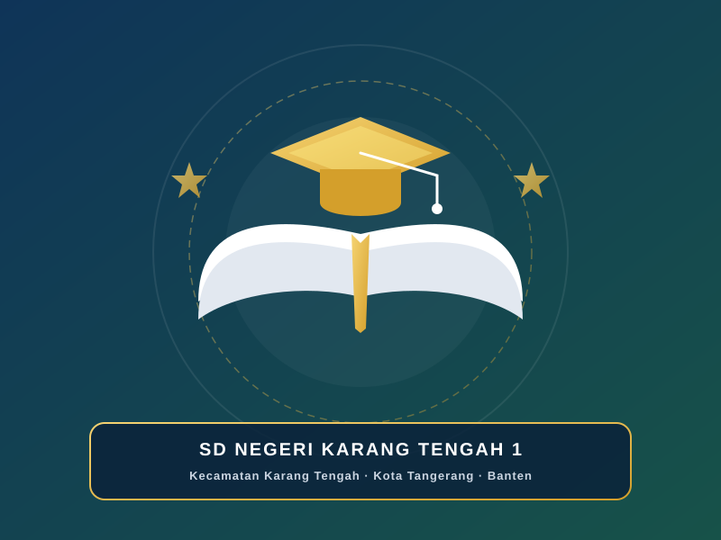

★ SEKOLAH DASAR NEGERI
SD NEGERI KARANG TENGAH 1
Sekolah Dasar Negeri di Kecamatan Karang Tengah, Kota Tangerang.
Ruang belajar yang aman, aktif, dan mendukung tumbuh kembang peserta didik.

Profil Singkat
Pendidikan Berkualitas Berlandaskan Karakter
SD Negeri Karang Tengah 1 adalah institusi pendidikan dasar negeri di bawah naungan Dinas Pendidikan Kota Tangerang, berkomitmen menyelenggarakan kegiatan belajar mengajar yang mendidik, ramah anak, dan berkualitas.
Nama SekolahSD NEGERI KARANG TENGAH 1
NPSN20607151
Status SekolahNegeri
Status AkreditasiA
AlamatJalan Raden Saleh No. 118, Kelurahan Karang Tengah, Kecamatan Karang Tengah, Kota Tangerang, Banten 15157
Bidang Fokus
Fokus Pembelajaran & Pembiasaan
Bidang fokus pembelajaran dan pembiasaan positif di lingkungan SDN Karang Tengah 1.
01
Literasi & Numerasi
Penguatan kemampuan membaca pemahaman, pojok baca kelas, dan pengenalan konsep berhitung terapan.
02
Karakter & Kebersamaan
Penanaman budi pekerti, kepedulian sesama, etika sopan santun, dan pembiasaan positif di sekolah.
03
Lingkungan & Kesehatan
Edukasi kebersihan kelas, pemeliharaan sarana belajar, dan pembiasaan pola hidup sehat dan bersih.
Warta Sekolah
Kabar & Kegiatan Terbaru
Dokumentasi dan informasi kegiatan akademik maupun non-akademik di SDN Karang Tengah 1.
Pemberitahuan Resmi
Pengumuman Penting
Informasi penting untuk peserta didik, dewan guru, dan orang tua/wali murid.
Pencapaian Siswa
Prestasi & Kebanggaan Sekolah
Apresiasi dedikasi peserta didik SDN Karang Tengah 1 dalam berbagai ajang bakat dan kompetisi.
Dokumentasi Visual
Galeri Kegiatan Sekolah
Momen kegiatan belajar, upacara bendera, dan lingkungan belajar peserta didik.
Pengembangan Bakat & Minat
Kegiatan Ekstrakurikuler
Wadah kreativitas, keterampilan fisik, kepemimpinan, dan kecerdasan sosial di luar jam kelas.
Dokumentasi Eskul
Aktivitas & Laporan Latihan
Struktur Akademik
Data Rombongan Belajar (Rombel)
Sebaran peserta didik pada setiap tingkatan rombongan belajar SDN Karang Tengah 1.
12
Total Rombongan Belajar
345
Total Peserta Didik
Kelas 1 s/d 6
Jenjang Pendidikan Dasar
Agenda Pembelajaran
Jadwal & Kalender
Agenda dan waktu kegiatan belajar mengajar.
Unduhan Publik
Dokumen & Surat
Berkas kurikulum, kalender pendidikan, dan formulir resmi.
SPMB KOTA TANGERANG
Penerimaan Peserta Didik Baru (SPMB)
Informasi jalur pendaftaran, persyaratan berkas, daya tampung rombel, zonasi, dan jadwal resmi Penerimaan Peserta Didik Baru SDN Karang Tengah 1 mengacu pada portal resmi SPMB Kota Tangerang.
Lokasi & Komunikasi
Hubungi Kami
SD Negeri Karang Tengah 1 senantiasa terbuka menyambut komunikasi dari orang tua/wali dan masyarakat.
Alamat Sekolah
Jalan Raden Saleh No. 118, Kelurahan Karang Tengah, Kecamatan Karang Tengah, Kota Tangerang, Banten 15157
Email Resmi
Arsip Blogspot Lama
Identitas Resmi Satuan Pendidikan
NPSN20607151
Bentuk PendidikanSekolah Dasar
Status SekolahNegeri
KecamatanKarang Tengah
Kota / KabupatenKota Tangerang
ProvinsiBanten
Kode Pos15157
PenyelenggaraanPagi / 6 Hari